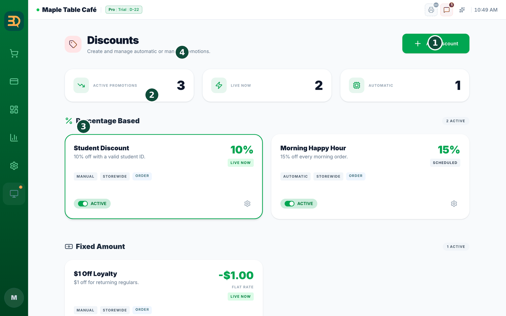
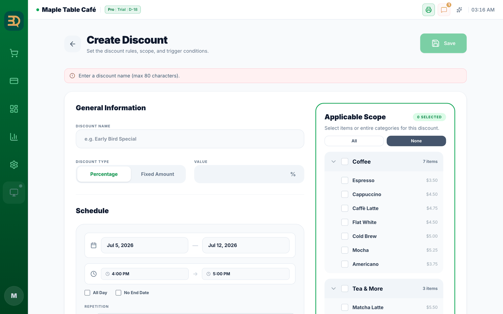
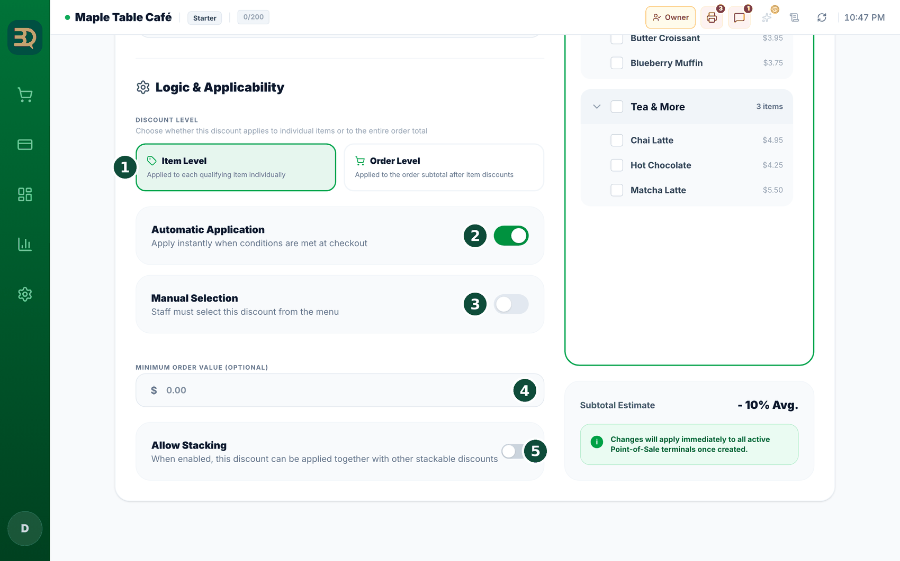
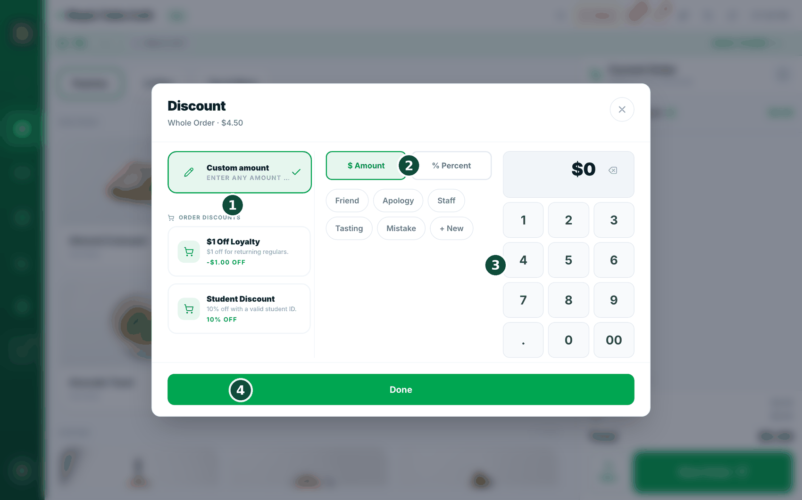
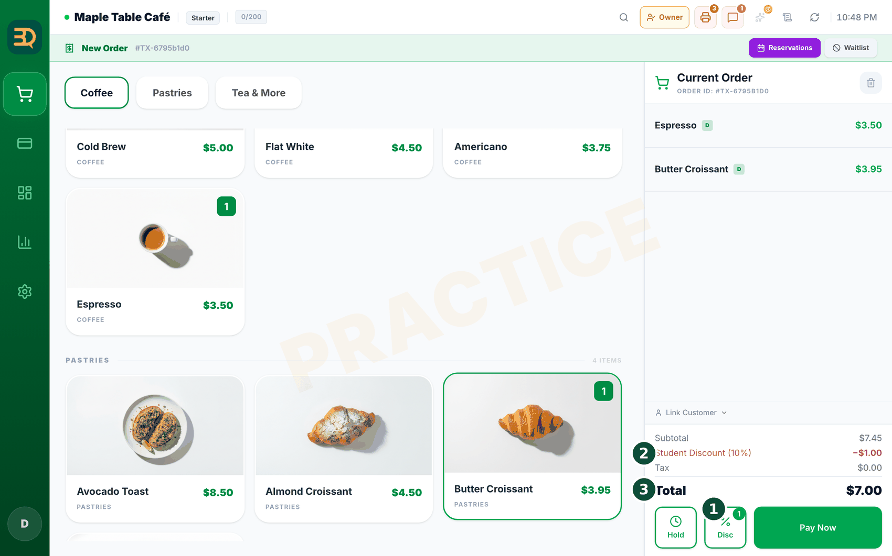

8할인 & 프로모션
할인은 판매 금액에서 일정 금액을 차감하는 것입니다. 해피 아워와 행사를 한 번만 설정하면 BrewDesk가 계산대에서 계산을 대신 처리합니다.


- 왼쪽 사이드바의 Manage(관리) › Discounts(할인)를 열고 Add Discount를 탭합니다. "Create Discount" 양식이 열립니다.
- Discount Name(할인 이름)을 입력합니다.
- Discount Type을 선택합니다 — "Percentage"(10% 할인 같은) 또는 "Fixed Amount"($2 할인 같은) — 그리고 Value(값)를 입력합니다.
- Schedule(일정)을 정합니다: 시작·종료 날짜, "All Day"나 시간대, 끝나지 않으면 "No End Date", 반복(반복 없음 / 매주 / 매월 / 사용자 지정).
- Applicable Scope(적용 범위)에서 어디에 적용할지 선택합니다: "All"(모든) 상품, 또는 체크박스로 특정 카테고리나 상품을 선택합니다.

- 어떻게 적용할지 선택합니다: Automatic(결제 때 자동으로 차감) 또는 Manual(직원이 결제 때 "Apply Discount"를 탭해 선택).
- 선택 사항: Minimum Order Value(최소 주문 금액)를 정하고, 다른 할인과 합쳐지게 하려면 Allow Stacking을 켭니다.
- Save를 탭합니다. 할인이 준비되었습니다.
알아두면 좋습니다: BrewDesk는 항상 할인 후에 세금을 계산하므로 합계가 늘 정확합니다.
계산대에서 바로 할인 · 서비스
미리 만들어 두는 할인은 매주 반복되는 일에 사용합니다. 이 기능은 그때 한 번뿐인 경우에 사용합니다 — 단골에게 조금 깎아 드리거나, 다시 만들어 드린 음료거나, 지인에게 커피 한 잔을 드리는 경우입니다. 장바구니에서 세 번 정도 탭하면 완료됩니다.
여는 곳
장바구니에서 상품을 탭하면 해당 줄에 Discount(할인) · Free(서비스) 버튼이 있습니다. 주문 전체에 적용하려면 아래쪽 Bill 옆의 Disc 버튼을 탭합니다.

- 상품 하나에는 Discount, 주문 전체에는 Disc를 탭합니다. 숫자판 패널이 열립니다.
- 입력 방식을 선택합니다 — 금액(Amount)이나 % 퍼센트(Percent).
- 숫자판으로 값을 입력합니다.
- 사유 칩을 하나 탭합니다 — 지인(Friend) · 사과(Apology) · 직원(Staff) · 시식(Tasting) · 실수(Mistake). 해당하는 것이 없으면 "+ 추가"(+ New)로 직접 입력합니다. 직접 입력한 사유는 다음에도 표시됩니다.
- "완료"(Done)를 탭하면 장바구니 합계가 바로 바뀝니다.
- 되돌리려면 같은 버튼을 다시 탭합니다 — 그때는 "할인 해제"(Remove Discount) 또는 "서비스 해제"(Remove Free)로 표시됩니다.

전액을 입력했다면? BrewDesk가 "전액입니다. 서비스로 기록할까요?"라고 확인하고 "서비스로 기록" 버튼을 제공합니다. 이렇게 해 두면 리포트에서 "그냥 드린 것"과 "깎아 드린 것"이 구분됩니다 — 월말에 사장님이 실제로 알고 싶은 것이 바로 그 구분입니다.
설정에서 만든 할인을 "Manual"로 설정해 두셨나요? 주문 전체를 조정할 때 이 패널 안에 타일로 표시되므로, 직원은 숫자를 입력할 필요 없이 탭만 하면 됩니다. 아직 만든 할인이 없으면 Create discount 버튼이 표시되어 만드는 화면으로 이동합니다.
할인한 뒤에 수량을 바꿨다면? 조정이 취소되고 "수량이 바뀌어 조정이 취소되었습니다"라고 표시됩니다. 의도된 동작입니다 — 두 잔에서 2,000원 깎은 것과 다섯 잔에서 2,000원 깎은 것은 서로 다른 경우이므로, 임의로 넘기지 않고 다시 확인하도록 했습니다.
서비스로 나간 상품은 마감 요약에 따로 한 줄로 표시됩니다 — 리포트 & 하루 마감을 참고해 주세요.